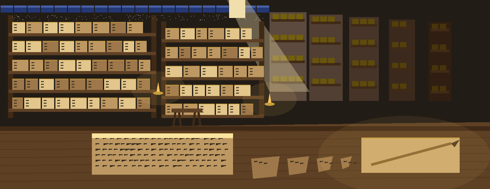
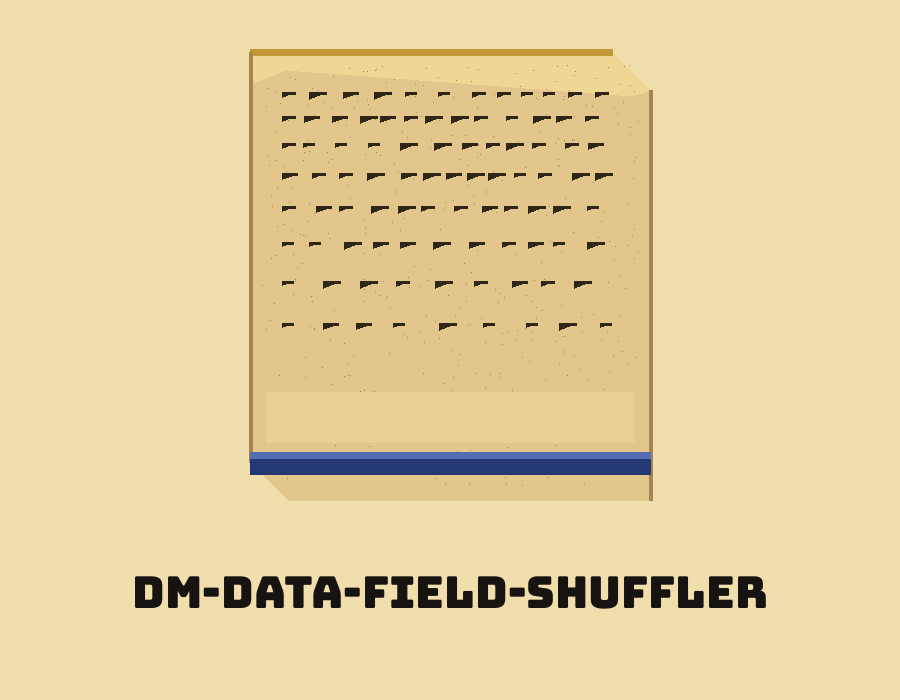
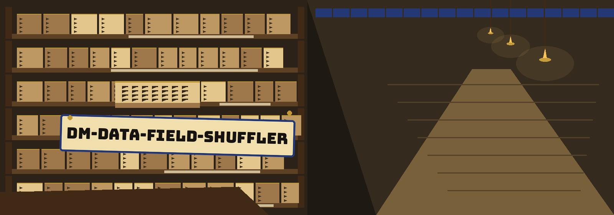
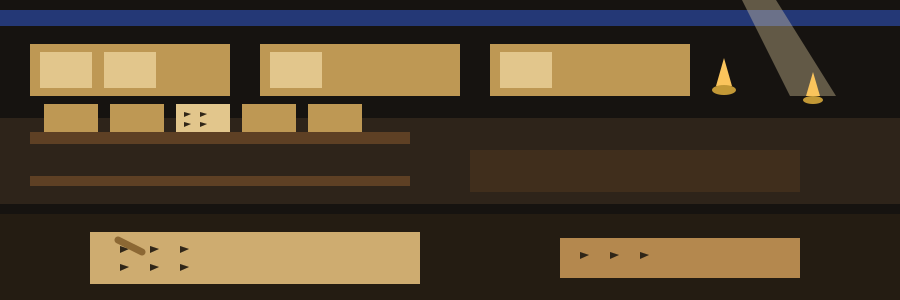

dm-data-field-shuffler: Assyrian Library of Clay Tablets
dm-data-field-shuffler: Assyrian Library of Clay Tablets names itself in that form throughout this page. The page is laid out as a shelf walk, one bay per plate, read as a visitor moves down an aisle. Lapis is held for rules, shelf bands, and the active marker. Gold appears on lamp points and on nothing structural.



Order Changes, Values Do Not
Refused Before Opening
Nothing Written from an Empty File
Plate one: the job
Field order inside each record is shuffled. Values are not altered. Position based study of the records is what this defeats, because position stops being a stable clue to what a field holds.
Plate two: the two file refusals
An output name that matches the input name ends the run at exit 1 before any file is opened. An empty input ends the run at exit 1, prints the fixed line held in the record block below, and writes no output, with or without the header flag.
Plate three: the copying bay, repaired
git clone https://github.com/ShadowGuard-AI/dm-data-field-shuffler
A marginal wedge announces that a repair happened here rather than pretending the tablet always read that way. The clone command above carries the organisation spelled with the hyphen. The spelling the README itself uses is a different one: it drops the hyphen. Across the whole fetched README that hyphenless spelling occurs 2 times, 1 in the install line and 1 in the closing rights line, while the hyphenated spelling occurs 0 times there.
Plate four: the usage shape
./dm-data-field-shuffler <input path> <output path> [params]
The shape shows a program call, then placeholders for the input path, the output path, and any parameters. No real path from any machine appears. The live README itself never names the file arguments, so this site labels them as positions a caller must supply, not as names the README gives.
Plate five: the two printed controls
Help first: -h shows the help message and exits. Header second: -H treats the first row as a header and preserves it, while every row beneath it gets reordered.
What no control covers, on the evidence available: no seed control is documented, no format choice is documented, and no output message is documented.
Plate six: rights
Two things stand side by side in this last bay. First, the README own rights line, reproduced untouched in the record block underneath. Second, a terse reminder: the separate LICENSE document runs on MIT terms, and who holds those terms has been noted by arrangement alone, pen name, bracketed shortening, handle, never by spelling the arrangement out.
The preserved README record
 # dm-data-field-shuffler Shuffles the order of fields within each data record. This breaks simple field-order-dependent attacks and analysis without altering the individual field values. - Focused on Tools designed to generate or mask sensitive data with realistic-looking but meaningless values ## Install `git clone https://github.com/ShadowGuardAI/dm-data-field-shuffler` ## Usage `./dm-data-field-shuffler [params]` Naming the output file as the input file is refused at exit 1 before any file is opened. An empty input file exits 1 with the line `Input file is empty.`, whether or not the header flag is given, and writes no output. ## Parameters - `-h`: Show help message and exit - `-H`: Treat the first row as a header and preserve it. ## License Copyright (c) ShadowGuardAI